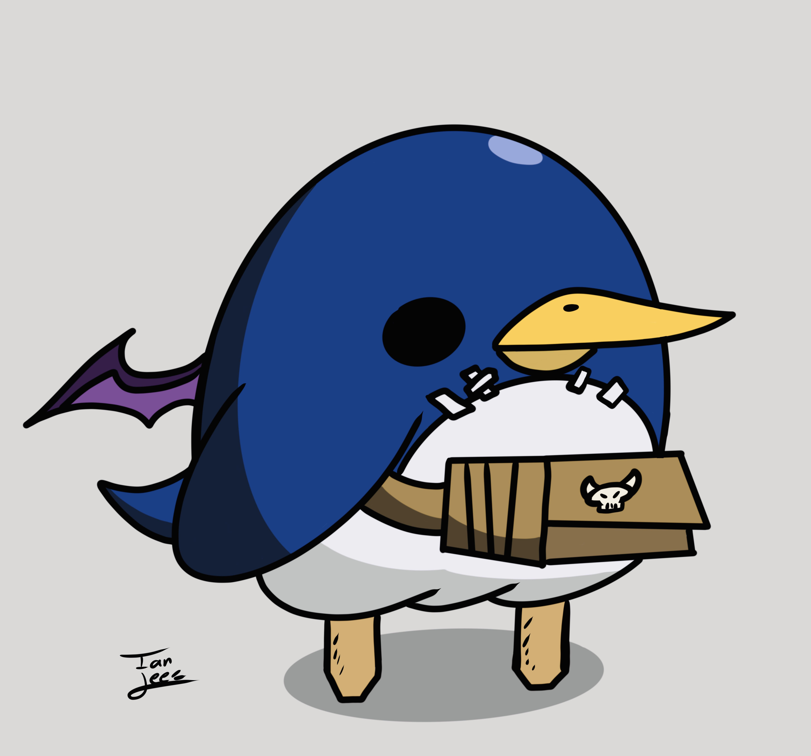

Mikko Pitkänen
I don't have any good pictures of myself but I thougth that this penguin is funny and looks kinda like me
(pmikko@student.uef.fi, @pingviiniPitkänen at instagram and discord)
I'm a third year student at UEF studying Information technology. I studied the same subject for two years at Oulu Unviersity but this summer I came here. So in a way it's also my first year because while changing universities I lost over 100 credits :(
My interests include retro video games especially the Disgaea, Final Fantasy and Castlevania series. I also sometimes play Old School Runescape. Propably the most intresting thing about me is that I'm a blacksmith but unfortunately I haven't been able to do much forging because my shop is located in Satakunta.
When it comes to computers my points of interests include open source projects, linux, hash algorithms, HCI and terminal based programs. I started learning programming with C+ when I was 14 but now I would say that java is closest to a native language for me. I've also used C#, C++, Bash, Kotlin and currently I'm learning some basic COBOL as a fun side projects